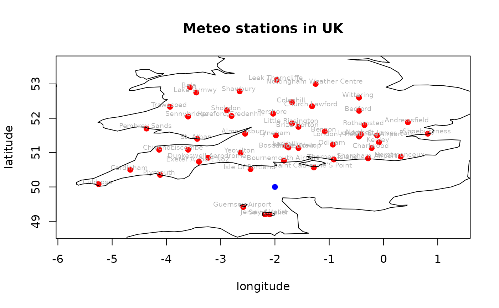

R/nearest_stations_ogimet.R
nearest_stations_ogimet.RdReturns a data frame of meteorological stations with their coordinates and distance from a given location based on the ogimet webpage. The returned list is valid only for a given day.
country name; It is possible to provide more than one country combined into a vector
optionally, a day when measurements were done in all available locations; Sys.Date used by default
logical - whether to draw a map for a returned data frame (requires maps/mapdata packages)
a vector of two coordinates (longitude, latitude) for a point we want to find nearest stations to (e.g. c(0, 0))
how many nearest stations will be returned from the given geographical coordinates
logical - whether to proceed or stop on failure. By default set to TRUE (i.e. don't stop on error). For debugging purposes change to FALSE
extra arguments to be provided to the graphics::plot() function (only if add_map = TRUE)
A data.frame with number of nearest station according to given point columns describing stations parameters
(e.g. ID station, distance from point in km, geographic coordinates, etc.). Each row represent a measurement,
each station which has a measurements on selected date. If add_map = TRUE additional map of downloaded data is added.
# \donttest{
nearest_stations_ogimet(country = "United Kingdom",
point = c(-2, 50),
add_map = TRUE,
no_of_stations = 50,
allow_failure = TRUE,
main = "Meteo stations in UK")

#> wmo_id station_names lon lat alt distance
#> 118 03857 Isle Of Portland -2.450009 50.51668 52 76.87423
#> 119 03862 Bournemouth Airport -1.833350 50.76668 12 88.02782
#> 126 03896 Saint Helier -2.100002 49.20000 54 90.45543
#> 125 03895 Jersey Airport -2.183337 49.20000 84 92.08374
#> 124 03894 Guernsey Airport -2.583345 49.41667 102 92.55780
#> 120 03866 Saint Catherine'S Point -1.283339 50.56668 20 102.50669
#> 101 03746 Boscombe Down -1.750015 51.15000 124 132.03977
#> 117 03853 Yeovilton -2.633346 51.00000 23 132.80632
#> 102 03749 Middle Wallop -1.566678 51.13334 91 136.13384
#> 100 03743 Larkhill -1.800016 51.20000 132 136.49329
#> 121 03872 Thorney Island -0.916685 50.80002 4 151.09510
#> 115 03840 Dunkeswell Aerodrome -3.233338 50.85002 252 168.05741
#> 99 03740 Lyneham -1.983353 51.50001 145 168.30649
#> 116 03844 Exeter Airport No2 -3.400008 50.73335 31 177.32121
#> 103 03761 Odiham -0.933352 51.23334 123 182.94804
#> 135 03930 Almondsbury -2.550011 51.55001 75 184.53014
#> 90 03649 Brize Norton -1.566678 51.75001 88 202.27540
#> 91 03658 Benson -1.083335 51.61668 62 208.51460
#> 89 03647 Little Rissington -1.683347 51.85002 210 210.58428
#> 122 03876 Shoreham Airport -0.283339 50.83335 2 214.09869
#> 97 03710 Liscombe -3.600012 51.08333 348 216.79385
#> 98 03716 St. Athan -3.433342 51.40001 50 224.79946
#> 104 03769 Charlwood -0.216671 51.13334 67 237.07008
#> 82 03529 Pershore -2.033334 52.13334 35 239.38242
#> 106 03772 London / Heathrow Airport -0.450009 51.46668 24 239.41862
#> 114 03827 Plymouth -4.116669 50.35001 50 240.70808
#> 92 03672 Northolt -0.416675 51.53334 38 247.29281
#> 81 03522 Hereford/Credenhill -2.800016 52.06667 76 248.64013
#> 107 03781 Kenley -0.083335 51.30001 170 259.84178
#> 96 03707 Chivenor -4.133336 51.08333 8 268.44650
#> 80 03520 Shobdon -2.883351 52.23334 99 269.46146
#> 105 03770 London, St James Park -0.116669 51.50001 5 270.13468
#> 93 03680 Rothamsted -0.350007 51.80002 128 273.96522
#> 84 03544 Church Lawford -1.316673 52.35001 107 274.58330
#> 123 03882 Herstmonceux 0.316673 50.88335 52 278.17723
#> 83 03535 Coleshill -1.683347 52.46668 96 279.02389
#> 79 03507 Sennybridge -3.600012 52.05000 307 291.76620
#> 85 03560 Bedford -0.450009 52.21667 85 303.47286
#> 113 03823 Cardinham -4.666680 50.50001 200 304.40659
#> 72 03414 Shawbury -2.650013 52.78335 76 320.68526
#> 88 03605 Pembrey Sands -4.366674 51.70001 3 326.93720
#> 73 03462 Wittering -0.450009 52.60001 83 339.61572
#> 78 03503 Trawscoed -3.933352 52.33334 63 339.98231
#> 94 03684 Andrewsfield 0.450009 51.88335 87 346.71413
#> 62 03354 Nottingham Weather Centre -1.250005 53.00000 117 346.94891
#> 71 03410 Lake Vyrnwy -3.450009 52.75001 360 348.80552
#> 58 03330 Leek Thorncliffe -1.966686 53.11667 298 349.69987
#> 95 03693 Shoeburyness 0.816683 51.55001 2 360.71251
#> 112 03809 Culdrose -5.250005 50.08333 81 364.75960
#> 70 03409 Bala -3.566678 52.90002 163 369.81671
# }